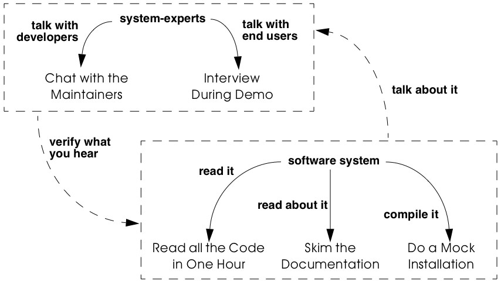
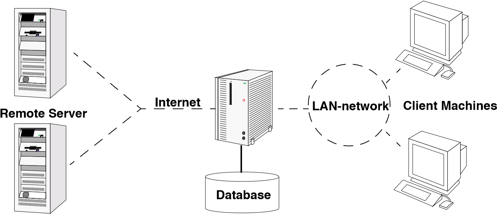

3. First Contact
You are part of a team developing a software system named proDoc which supports doctors in their da The main functional requirements concern (i) maintaining patient files and (ii) keeping track of the money to be paid by patients and health insurances. The health care legislation in Switzerland is quite complicated and changes regularly, hence there are few competitors to worry about. Nevertheless, a fresh start-up company has recently acquired considerable market-share with a competing product named XDoctor. The selling features of XDoctor are its platform independency and its integration with the internet. The system offers a built-in e-mail client and web-browser. XDoctor also exploits the internet for the transaction processing with the health insurances.
To ensure its position in the market, your company has purchased XDoctor and now wants to recover as much as possible from the deal. In particular, they want to lift the internet functionality out of XDoctor to reuse it into proDoc. You are asked to make a first evaluation and develop a plan on how to merge the two products into one. At the outset, there is very little known about the technical details of the competing product. From the original development team of four persons, only one has joined your company. His name is Dave and he has brought a large box to your office containing lots of paper (the documentation?) and two CDs. The first is the XDoctor installation disk containing an installer for Windows, MacOS and Linux. The other contains about 500,000 lines of Java code and another 10,000 lines of C code. Looking kind of desperately at this box sitting on your desk, you’re wondering “Where on earth do I start?”
Forces
It is surprising how often reengineering projects get started. Not only does it happen after a fusion of two companies, but we also encountered projects in which code libraries were obtained from companies that later went bankrupt, or in which complete maintenance teams quit their project leaving behind a very valuable but incomprehensible piece of code. Of course, the obvious question to ask is “Where do I start?” It turns out that this is one of the crucial questions to answer during a reengineering project, which is why we devote an entire chapter to its answer.
All the patterns in this cluster can be applied to the very early stages of a reengineering project: you’re facing a system that is completely new for you, and within a few days you must determine whether something can be done with it and present a plan how to proceed. Making such an initial assessment is difficult, however, because you quickly need accurate results while considering the long-term effects of your decisions. To deal with the inherent conflict between quick, accurate and longer term effects, the patterns in this cluster must resolve the following forces.
-
Legacy systems are large and complex. Scale is always an issue when dealing with legacy systems [1]. However, there is only so much a single reengineering team can do and when the legacy system is too big or too complex you can’t do the job in one shot. _Consequently, split the system into manageable pieces, where a manageable piece is one you can handle with a single reengineering team. How much a single team can manage varies with the goal of the reengineering project, the state of the original system, the experience and skills in your team and the culture in your organization. Our teams consisted of three to five persons and they could handle between 500.000 and a million lines of code. However, these figures will certainly have to be adapted for the reengineering project you are facing. As a rule of the thumb, assume that a single team can reengineer as much code as they can write from scratch. Improve your estimates during the reengineering project by keeping logs of how much your team actually reengineered.
If you need to split the code up, stay as close as possible to current system structure and the organization of the maintenance team. Once you have a good understanding of the system structure, consider alternatives which are better suited for the project goal.
-
Time is scarce. Wasting time early on in a project has severe consequences later on. This is especially relevant during reverse engineering, because there you feel uncertain and then it is tempting to start an activity that will keep you busy for a while instead of addressing the root of the problem. Consequently, consider time as your most precious resource. Therefore, defer all time-consuming activities until later and use the first days of the project to assess the feasibility of the project’s goals. All patterns in this cluster are meant to quickly identify the opportunities and risks for your project and as such will help you set the overall direction of the project.
-
First impressions are dangerous. Making important decisions based on incomplete knowledge implies that there is a chance you will make the wrong decision. There is no way to avoid that risk during your first contact with a system, however you can minimize its impact if you always double-check your sources.
-
People have different agendas. Normally, you will join a group of people where several members will have lots of experience with the system to be reengineered. Perhaps members of the original development team are still available or maybe the reengineering team includes persons who have been maintaining the system for some time. At least there will be end users and managers who believe enough in this system to request a reengineering project. You are supposed to complement the team with your reengineering skills and expertise, hence you should know who you are dealing with.
Typically, your new colleagues will fall into three categories. The first category are the faithful, the people who believe that reengineering is necessary and who thrust that you are able to (help them) do it. The second is the category of the sceptical, who believe this whole reengineering business is just a waste of time either because they want to protect their jobs or either because they think the whole project should start again from scratch. The third category is the category of the fence sitters, who do not have a strong opinion on whether this reengineering will pay off, so they just wait and see what happens. _Consequently, in order to make the project a success, you must keep convincing the faithful, gain credit with the fence sitters and be wary of the sceptics. === Overview
Wasting time is the largest risk when you have your first contact with a system, therefore these patterns should be applied during a short time span, say one week. After this week you should grasp the main issues and

Figure 3.1: Assess the feasibility of the project during your First Contact with the system.
based on that knowledge plan further activities, or — when necessary — cancel the project.
The patterns Chat with the Maintainers and Interview During Demo will help you get acquainted with the people involved. As a rule of the thumb, spend four days to gather information and use the last day of the week to compile all this information into a first project plan. There is no strict order in which to apply the patterns, although the order as suggested by the sequence in the book is kind of typical. Nevertheless, we have often find ourselves combining fragments of these patterns because of the necessity to double-check. For instance, during a second meeting with the maintainers we usually start with an Interview During Demo but ask questions about what we have learned from Read all the Code in One Hour and Skim the Documentation. Also, after an interview we quickly check the source code and documentation to confirm what has been said.
In certain situations we have experienced that some patterns are not applicable due to a lack of resources. For instance, if all the maintainers have left the company you cannot Chat with the Maintainers. Also, certain systems lack an external user-interface and then it is pointless to try an Interview During Demo with an end-user. This isn’t necessarily a problem, because some of these patterns may be irrelevant for your project goal anyway. However, the absence of resources is an extra risk to the project and it should be recorded as such in the first project plan.
What Next
Once you have the necessary information, it is time to compile the first project plan. Such a plan is very similar to the plans you normally use when launching a project and the standard document templates used in your company should therefore be used. When necessary, bend the rules to include at least the following items.
-
Project Scope. Prepare a short (half a page) description of the project, including its context, its goals and the criteria that will be used to verify whether you reached those goals. Involve the Users [p. 169] and Agree on Maxims [p. 22] to write this part of the plan.
-
Opportunities. Identify those factors you expect will contribute to achieve the project goals. List the items that you have discovered during the first contact, such as the availability of skilled maintainers and power-users, the readability of the source code or the presence of up-to date documentation.
-
Risks. Consider elements that may cause problems during the course of the project. List those items that you did not find or where the quality was inferior, such as missing code libraries or the absence of test suites. If possible, include an assessment for the likelihood (unlikely, possible, likely) and the impact (high, moderate, low) for each risk. Special attention must be paid to the critical risks, i.e. the ones that are possible/likely and have a moderate/high impact or the ones that are likely but have a low impact.
-
Go / No-go decision. At some point you will have to decide whether the project should be continued or cancelled. Use the above opportunities and risks to argue that decision.
-
Activities. (In case of a “go” decision) Prepare a fish-eye view of the upcoming period, explaining how you intend to reach the project goal. In a fish-eye view, the short term activities are explained in considerable detail while for the later activities a rough outline is sufficient. Most likely, the short term activities will correspond to the patterns described in Initial Understanding. For the later activities check the subsequent chapters.
The list of activities should exploit the opportunities and reduce the (critical) risks. For instance, if you list the presence of up-to date documentation as an opportunity and the absence of a test suite as a critical risk, then you should plan an activity which will build a test suite based on the documentation.
3.1 Chat with the Maintainers
Intent Learn about the historical and political context of your project through discussions with the people maintaining the system.
Problem
How do you get a good perspective on the historical and political context of the legacy system you are reengineering?
This problem is difficult because:
-
Documentation, if present, typically records decisions about the solution, not about the factors which have influenced that solution. Consequently, the important events in the history of the system (i.e., its historical context) are rarely documented.
-
The system is valuable (otherwise they wouldn’t bother to reengineer it) yet management has lost control (otherwise they wouldn’t need to reengineer the system). At least some of the people related issues concerning the software system are messed up, thus the political context of a legacy system is problematic by nature.
-
Persons working with the system might mislead you. Sometimes people will deliberately deceive you, especially when they are responsible for the problematic parts of the system or when they want to protect their jobs. Most of the time they will mislead you out of ignorance, especially when chief developers are now working on other projects and the junior staff are the only ones left for system maintenance.
Yet, solving this problem is feasible because:
-
You are able to talk to the maintenance team. While they might not know everything about the original system context, they most likely know a great deal about how the system got to its current state.
Solution
Discuss with the system maintainers. As technical people who have been intimately involved with the legacy system, they are well aware of the system’s history and the people-related issues that influenced that history.
To avoid misleading information, treat the maintainers as “brothers in arms”. Try to strike a kind of bargain where you will make their job easier (more rewarding, more appreciated, — whatever is most likely to convince them) if they will just take some time to explain you about what they are doing. This has the extra benefit that it will gain you the respect you need for the later phases of your reengineering project.
Hints
Here are some questions that may help you while discussing with the maintainers. It is best to ask these questions during an informal meeting (no official minutes, no official agenda) although you should be prepared to make notes after the meeting to record your main conclusions, assumptions and concerns.
-
What was the easiest bug you had to fix during the last month? And what was the most difficult one? How long did it take you to fix each of them? Why was it so easy or so difficult to fix that particular bug?
Those kinds of questions are good starters because they show that you are interested in the maintenance work. Answering the questions also gives the maintainers the opportunity to show what they excel at, which will make them less protective of their job. Finally, the answers will provide you with some concrete examples of maintenance problems you might use in later, more high-level discussions.
-
How does the maintenance team collect bug reports and feature requests? Who decides which request gets handled first? Who decides to assign a bug report or feature request to a maintainer? Are these events logged in some kind of database? Is there a version or configuration management system in place?
These questions help to understand the organization of the maintenance process and the internal working habits of the maintenance team. As far as the political context concerns, it helps to assess the relationship within the team (task assignment) and with the end users (collection of bug reports).
-
Who was part of the development/maintenance team during the course of years? How did they join/leave the project? How did this affect the release history of the system?
These are questions which directly address the history of the legacy system. It is a good idea to ask about persons because people generally have a good recollection of former colleagues. By afterwards asking how they joined or left the project, you get a sense for the political context as well. * How good is the code? How trustworthy is the documentation?
This question is especially relevant to see how well the maintenance team itself can assess the state of the system. Of course you will have to verify their claims yourself afterwards (see Read all the Code in One Hour and Skim the Documentation).
-
Why is this reengineering project started? What do you expect from this project? What will you gain from the results?
It is crucial to ask what the maintainers will gain from the reengineering project as it is something to keep in mind during the later phases. Listen for differences — sometimes subtle — in what management told you they expect from the project and what the maintainers expect from it. Identifying the differences will help you get a sense of the political context.
Tradeoffs
Pros
-
Obtains information effectively. Most of the significant events in the life-time of a software system are passed on orally. Discussing with the maintainers is the most effective way to tap into this rich information source.
-
Get acquainted with your colleagues. By discussing with the maintainers you have a first chance to appraise your colleagues. As such, you’re likely to gain the necessary credibility that will help you in the later phases of the reengineering project.
Cons
-
Provides anecdotal evidence only. The information you obtain is anecdotal at best. The human brain is necessarily selective regarding which facts it remembers, thus the recollection of the maintainers may be insufficient. Worse, the information may be incomplete to start with, since the maintainers are often not the original developers of the system. Consequently, you will have to complement the information you obtained by other means (see for instance Skim the Documentation, Interview During Demo, Read all the Code in One Hour and Do a Mock Installation).
Difficulties
-
People protect their jobs. Some maintainers may not be willing to provide you with the information you need because they are afraid of losing their jobs. It’s up to you to convince them that the reengineering project is there to make their job easier, more rewarding, more appreciated. Consequently, you should ask the maintainers what they expect from the reengineering project themselves.
-
Teams may be unstable. Software maintenance is generally considered a second-class job, often left to junior programmers and often leading to a maintenance team which changes frequently. In such a situation, the maintainers cannot tell you about the historical evolution of a software system, yet it tells you a great deal about its political context. Indeed, you must be aware of such instability in the team, as it will increase the risk of your project and reduce the reliability of the information you obtain. Consequently, you should ask who has been part of the development/maintenance team over the course of the years.
Example
While taking over XDoctor, your company has been trying to persuade the original development team to stay on and merge the two software systems into one. Unfortunately, only one member — Dave — has agreed to stay and the three others have left for another company. As it is your job to develop a plan for how to merge the two products, you invite Dave for lunch to have an informal chat about the system.
During this chat you learn a great deal. The good news is that Dave was responsible for implementing the internet communication protocols handling the transactions with the health insurances. As this was one of the key features lacking in your product, you’re happy to have this experience added to your team. More good news is that Dave tells you his former colleagues were quite experienced in object-oriented technology, so you suspect a reasonable design and readable source code. Finally, you hear that few bug reports were submitted and that most of them have been handled fast. Likewise, the list of pending product enhancements exists and is reasonably small. So you conclude that the customers are quite happy with the product and that your project will be strategically important.
The not so good news is that Dave is a hard core C-programmer who was mainly ignored by his colleagues and left out of the design activity for the rest of the system. When you ask about his motives to stay in the project he tells you that he originally joined because he was interested to experiment with internet technology but that he is kind of bored with the low-level protocol stuff he has been doing and wants to do more interesting work. Of course, you ask him what he means with “more interesting” and he replies that he wants to program with objects.
After the discussion, you make a mental note to check the source code to assess the quality of the code Dave has written. You also want to have a look at the list of pending bugs and requests for enhancements to compare the functionality of the two products you are supposed to merge. Finally, you consider contacting the training department to see whether they have courses on object-oriented programming as this may be a way to motivate your new team member.
Rationale
“The major problems of our work are not so much technological as sociological in nature.”— Tom De Marco, [DL99]
Accepting the premise that the sociological issues concerning a software project are far more important then the technological ones, any reengineering project must at least know the political context of the system under study.
_“Organizations which design systems are constrained to produce designs which are copies of the communications structure of these organizations.” — Melvin Conway, [Con68]
Conway’s law is often paraphrased as: “If you have 4 groups working on a compiler; you’ll get a 4-pass compiler”
One particular reason why it is important to know about the way the development team was organized, is because it is likely that this structure will somehow reflect the structure of the source code.
A second reason is that before formulating a plan for a reengineering project, you must know the capabilities of your team members as well as the peculiarities of the software system to be reverse engineered. Discussing with the maintainers is one of the ways — and given the “time is scarce” principle, a very efficient one — to obtain that knowledge.
“Maintenance fact #1: In the late ‘60s and throughout the 70’s, production system support and maintenance were clearly treated as second-class work. Maintenance fact #2: In 1998, support and maintenance of production systems continues to be treated as second-class work.” — Rob Thomsett, [Tho98]
While talking with the maintainers, you should be aware that software maintenance is often considered second-class work. If that’s the case for the maintenance team you are talking with, it may seriously disturb the discussion. Either because the maintenance team has changed frequently, in which case the maintainers themselves are unaware of the historical evolution. Or because the people you discuss with are very protective about their job, in which case they will not tell you what you need to know.
Known uses
During our experience with reengineering projects we made it a habit to kick-off the project during a meeting with the maintenance team. Only in retrospect did we understand how crucial such a meeting is to build up the trust required for the rest of the project. We learned the hard way that maintainers are very proud about their job and very sensitive to critique. Therefore, we emphasize that such a kick-off meeting must be “maintainer oriented”, i.e. aimed to let the maintainers show what they do well and what they want to do better. Coming in with the attitude that you — the newcomer — will teach these stupid maintainers how to do a proper job will almost certainly lead to disasters.
“The RT-100 — was developed by a third-party software vendor in the late 1980s and acquired by Nortel in 1990. For the next three years Nortel enhanced and maintained it before outsourcing it to another vendor to be systematically rewritten. This effort failed and the system was returned to Nortel in mid 1994. By this time, the original design team has been disbanded and scattered, and the product’s six customers organizations were quite unhappy. _RT-100 was assigned to Nortel’s Atlanta Technology Park laboratory. No staff members there had any experience with ACD software, and, due to another project’s cancellation, staff morale was quite low.” — Spencer Rugaber and Jim White, [RW98] The above quote is from a paper which describes the story of a reengineering project, and depicts very well the typical desperation a reengineering project had to start with. Yet — as described in the paper itself — this early assessment of the historical and political context made it possible for the project to succeed, because they knew very well which factors would make the stakeholders happy and consequently could motivate the new reengineering team.
In one of the case-studies of the DESEL project (Designing for Ease of System Evolution), Stephen Cook reports that it is crucial to talk to the maintainers as they know best which aspects of the domain are likely to change and which ones are likely to remain stable [CHR01]. As such, the maintainers have submerged knowledge about how the system could have been built, knowledge which is seldom documented. Yet, during this discussion one must emphasize a “design for evolution” mind-set, to force the maintainers to detach themselves from the latest problems they have been solving.
Related Patterns
There are several pattern languages which explicitly deal with the way a software development team is organized [Cop95] [Har96] [Tay00] [BDS+00]. Although meant for a forward engineering situation, it is good to be aware of them while discussing with the maintainers, because it may help you assess the situation more quickly.
What Next
During the discussion, you should avoid jumping to conclusions. Therefore, make sure that whatever you learn out of the discussion is verified against other sources. Typically these sources are the people working with the system (Interview During Demo), the documentation (Skim the Documentation) and the system itself (i.e., Read all the Code in One Hour & Do a Mock Installation).
With this verification, you have a solid basis to write down an initial plan for tackling the legacy system, including the possibility to cancel the project altogether. The discussion with the maintainers will influence this plan in various ways. First of all, you have a sense for the willingness of the maintenance team to cooperate, which will affect the work plan considerably. Second, you know the history of the system, including those parts that make it valuable and those events that caused most of the maintenance problems. Your plan will aim to resurrect the valuable parts and tackle those maintenance problems. Third, you have a sense for how the maintenance team communicates with the other stakeholders, which is important to get the plan accepted.
3.2 Read all the Code in One Hour
Intent Assess the state of a software system by means of a brief, but intensive code review.
Problem
How can you get a first impression of the quality of the source code?
This problem is difficult because:
-
The quality of the source code will vary quite a lot, depending on the people that have been involved in the development and maintenance of the system.
-
The system is large, so there is too much data to inspect for an accurate assessment.
-
You’re unfamiliar with the software system, so you do not know how to filter out what’s relevant.
Yet, solving this problem is feasible because:
-
You have reasonable expertise with the implementation language being used, thus you can recognize programming idioms and code smells.
-
Your reengineering project has a clear goal, so you can assess the kind of code quality required to obtain that goal.
Solution
Grant yourself a reasonably short amount of study time (i.e., approximately one hour) to read the source code. Make sure that you will not be disturbed (unplug the telephone and disconnect your e-mail) and take notes sparingly to maximize the contact with the code.
After this reading session, produce a short report about your findings, including
-
a general assessment of whether reengineering seems feasible and why (not);
-
entities which seem important (i.e., classes, packages, ···);
-
suspicious coding styles discovered (i.e., “code smells” [FBB+99]);
-
parts which must be investigated further (i.e., tests).
Keep this report short, and name the entities like they are mentioned in the source code.
Hints
The “time is scarce” principle demands some preparation. A checklist might help you focus your effort during the reading session. Such a checklist may be compiled from various sources.
-
The development team may have employed code reviews as part of their quality assurance. If they did, make sure you incorporate the checklists used during the reviews. If they didn’t, try some generic checklists used to review the kind of code you are dealing with.
-
Some development teams applied coding styles and if they did, it is good to be aware of them. Naming conventions especially are crucial to scan code quickly.
-
The programmers might have used coding idioms (i.e., C++ [Cop92] [Mey98] [Mey96]; Smalltalk [Bec97]) which help you recognize typical language constructs.
-
You probably have some questions that you would like an answer to.
Below are some additional items you might add to your checklist because they provide good entry points for further examination.
-
Functional tests and unit tests convey important information about the functionality of a software system. They can help to verify whether the system is functioning as expected, which is very imported during reengineering (see Tests: Your Life Insurance!).
-
Abstract classes and methods reveal design intentions.
-
Classes high in the hierarchy often define domain abstractions; their subclasses introduce variations on a theme.
-
Occurrences of the Singleton [p. 295] pattern may represent information that is constant for the entire execution of a system.
-
Surprisingly large structures often specify important chunks of functionality.
-
Comments reveal a lot about the design intentions behind a particular piece of code, yet may often be misleading.
Tradeoffs
Pros
-
Start efficiently. Reading the code in a short amount of time is very efficient as a starter. Indeed, by limiting the time and yet forcing yourself to look at all the code, you mainly use your brain and coding expertise to filter out what seems important.
-
Judge sincerely. By reading the code directly you get an unbiased view of the software system including a sense for the details and a glimpse on the kind of problems you are facing. Because the source code describes the functionality of the system — no more, no less — it is the only accurate source of information.
-
Learn the developers vocabulary. Acquiring the vocabulary used inside the software system is essential to understand it and communicate about it with other developers. This pattern helps to acquire such a vocabulary.
Cons
-
Obtain low abstraction. Via this pattern, you will get some insight in the solution domain, but only very little on how these map onto problem domain concepts. Consequently, you will have to complement the information you obtained with other, more abstract representations (for instance Skim the Documentation and Interview During Demo).
Difficulties
-
Does not scale. Reading all the code does not scale very well, from our experience a rate of 10,000 lines of code per hour is reasonable. When facing large or complex code, don’t try to spend more time to read more code as intensive reading is most effective when done is short bursts of time (no more than 2 hours). Instead, if you have a clear criterion to split the source code, try to pass a series of sessions. Otherwise, just go through all of the code and mark those parts that seem more important than others (based on Chat with the Maintainers) and then read in different sessions.
However, given the “Time is Scarce” principle, you should force yourself to be brief. Consequently, when dealing with large or complex code, don’t bother too much with the details but remind yourself of the goal of reading the code, which is an initial assessment of the suitability for reengineering.
-
Comments may mislead you. Be careful with comments in the code. Comments can help you in understanding what a piece of software is supposed to do. However, just like other kinds of documentation, comments can be outdated, obsolete or simply wrong. Consequently, when finding comments mark on your checklist whether it seems helpful and whether it seems outdated.
Example
From the discussion with Dave (the sole person left from the original development team and the one responsible for the low-level C-code) you recall that their system was mainly written in Java, with some low-level parts written in C and the database queries in SQL. You have experience with all these languages, so you are able to read the code.
You start by preparing a check-list and besides the normal items (coding styles, tests, abstract classes and methods, classes high in the hierarchy, ···) you add a few items concerning some questions you want resolved. One of them is “Readability of the C-code”, because you want to verify the coding style of Dave, your new team member. A second is the “Quality of the database schema”, because you know that the data of the two systems sooner or later will have to be integrated. A third is the “Handling of currencies”, because Switzerland will join the Euro-region and within six months all financial data must be converted to this new currency.
From reading the C-code, you learn that this part is quite cryptic (short identifiers with mysterious abbreviations, long multi-exit loops, ···). Nevertheless, the modules handling the internet protocols have unit tests, which makes you feel more confident about the possibility to incorporate them into your system.
The Java code presents a problem of scale: you can’t read 50.000 lines of code in a single hour. Therefore, you pick some files at random and you immediately discover that most class names have a two-character prefix, which is either UI or DB. You suspect a naming convention marking a 2tiered architecture (database layer and user-interface layer) and you make a note to investigate this further. Also, you recognize various class- and attribute names as being meaningful for the health care domain (such as Class DBPatient with attributes name, address, health insurance, ···). You even perceive a class DBCurrency, so you suppose that switching to Euro won’t cause a lot of problems, since the developers took the necessary precautions. Most of the classes and methods have comments following the Javadoc conventions, so you suspect that at least some of the documentation will be up-to date. Finally, you identified a large singleton object which contains various strings that are displayed on the screen, which leads you to conclude that it will even be possible to localize the system.
All this looks rather promising, however there are also a number of discouraging observations. What makes you most pessimistic is the presence of numerous long methods with large parameter lists and complex conditionals. Many of them seem to mix UI-logic (enabling/disabling of buttons and menu-items) with business-logic (updating database records). One thing (the calculation of prices) seems especially complicated and you make a note to investigate this further.
Concerning the database, you again recognize various table names and column names that are meaningful in the context of the health care domain. At first glance, the schema looks normalized, so here as well reverse engineering seems promising. The database also employs some stored procedures, which warrants further investigation.
After the reading session, you summarize your conclusions in the following note.
-
Incorporating the internet protocols is feasible: unit-tests and responsible programmer available.
-
Suspect a 2-tiered architecture based on naming convention. What about the business logic — mixed in with UI? (further verification!)
-
Readable code with meaningful identifiers; reverse engineering looks promising.
-
Currency object is present: Euro-conversion looks feasible (further investigation!)
-
Javadoc conventions used; verify documentation.
-
Calculation of prices seems complicated; why?
-
Database schema looks promising. Stored procedures requires further investigation.
Rationale
Code reviews are widely acknowledged as being a very effective means to find problems in programs written by peers [GG93] [Gla97]. Two important prerequisites have to be met in order to make such reviews costeffective: (a) a checklist must be prepared to help the reviewer focus on the relevant questions and (b) a review session must be kept short because reviewers cannot concentrate for a very long time (2 hours at maximum).
I took a course in speed reading and read “War and Peace” in twenty minutes. It’s about Russia.— Woody Allen
There is an important difference between traditional code reviews and the ones you perform during your first contact with a software system. The former is typically meant to detect errors, while the latter is meant to get a first impression. This difference implies that you need to care less about details and thus that you can read more code. Typical guidelines for code-reviews state that about 150 statements per hour can be reviewed [BP94]. However, during your first contact you don’t need such a detailed analysis and thus can increase the volume of code to be reviewed. We didn’t perform any serious empirical investigation, but from our experience 10,000 lines of code per hour seems reasonable.
Known Uses
The original pattern was suggested by Kent Beck, who stated that it is one of the techniques he always applies when starting a consultant job on an existing system. Robson [RBCM91] reports code reading as “the crudest method of gaining knowledge about a system” and acknowledges that it is the method most commonly used to understand an existing program. Some case studies reports also mention that reading the source code is one of the ways to start a reengineering project [BH95] [JC00].
While writing this pattern, one of our team members applied it to reverse engineer the Refactoring Browser [RBJ97]. The person was not familiar with Smalltalk, yet was able to get a feel for the system structure by a mere inspection of class interfaces. Also, a special hierarchy browser did help to identify some of the main classes and the comments provided some useful hints to what parts of the code were supposed to do. Applying the pattern took a bit more than an hour, which seemed enough for a relatively small system and slow progress due to the unfamiliarity with Smalltalk.
One particularly interesting occurrence of this pattern took place towards the end of the FAMOOS project. During the course of one week, a heterogeneous team of reverse engineers went for an on-site visit to participate in a kind of reverse engineering contest. The assignment was to invest four days and use the available reverse engineering tools to learn as much as possible about a particular C++ system. The fifth day was then used to report the findings to the original developers for verification. One of the team members finished his assignment too early, and took the opportunity to Read all the Code in One Hour. It turned out that this one person had a much better overview of the system: he could participate in all discussions and could even explain some of the comments of the developers.
What Next
After you Read all the Code in One Hour you should Do a Mock Installation to evaluate the suitability for reengineering. You may complement your findings if you Skim the Documentation and carry out an Interview During Demo to maximize your chances of getting a coherent view of the system. Before actually making a decision on how to proceed with the reengineering project, it is probably worthwhile to Chat with the Maintainers once more.
At the end of your first contact with the system, you should decide on how to proceed with (or cancel) the project. Reading the code will influence this decision in various ways. First of all, you have assessed the quality of the code (i.e., the presence of coding idioms and suspicious coding styles) and thus of the feasibility of reengineering project. Second, you have identified some important entities, which are good starting points for further exploration.
The list of the important entities (i.e., classes, packages, ···) resulting from Read all the Code in One Hour can be used to start Analyze the Persistent Data [p. 77] and Study the Exceptional Entities [p. 96]. This way you can refine your understanding of the source code, especially the way it represents the problem domain.
3.3 Skim the Documentation
Intent Assess the relevance of the documentation by reading it in a limited amount of time.
Problem
How to identify those parts of the documentation that might be of help?
This problem is difficult because:
-
Documentation, if present, is usually intended for the development team or the end users and as such not immediately relevant for reengineering purposes. Worse, it is typically out of date with respect to the current state of affairs, thus it may contain misleading information.
-
You do not yet know how the reengineering project will proceed, hence you cannot know which parts of the documentation will be relevant.
Yet, solving this problem is feasible because:
-
Some form of documentation is available, so at least there is a description that was intended to help the humans concerned with the system.
-
Your reengineering project has a clear goal, so you can select those parts of the documentation that may be valuable and those parts that will be useless.
Solution
Prepare a list summarizing those aspects of the system that seem interesting for your reengineering project. Then, match this list against the documentation and meanwhile make a crude assessment of how up to date the documentation seems. Finally, summarize your findings in a short report, including
-
a general assessment of whether the system documentation will be useful and why (not);
-
a list of those parts of the documentation that seem useful and why (e.g., requirement specifications, desired features, important constraints, design diagrams, user and operator manuals);
-
for each part, an impression of how up to date the description is.
Hints
Depending on the goal of the reengineering project and the kind of documentation you have at your disposal, you may steer the reading process to match your main interest. For instance, if you want insight into the original system requirements then you should look inside the system specification, while knowledge about which features are actually implemented should be collected from the end-user manual or tutorial notes. If you have the luxury of choice, avoid spending too much time trying to understand the design documentation (i.e., class diagrams, database schemas, ···): rather record the presence and reliability of such documents as this will be of great help in the later stages of reengineering.
Check whether the documentation is outdated with respect to the actual system. Always compare version dates with the date of delivery of the system and make note of those parts that you suspect are unreliable.
The fact that you are limited in time should force you to think how you can extract the most useful information. Below are some hints for things to look out for.
-
A table of contents gives you a quick overview of the structure and the information presented.
-
Version numbers and dates tell you how up to date that part of the documentation is.
-
Figures are a a good means to communicate information. A list of figures, if present, may provide a quick access path to certain parts of the documentation.
-
Screen-dumps, sample print-outs, sample reports, command descriptions, reveal a lot about the functionality provided by the system.
-
Formal specifications (e.g., state-charts), if present, usually correspond with crucial functionality.
-
An index, if present contains the terms the author considers significant.
Tradeoffs
Pros
-
Provides a high abstraction level. Documentation is supposed to be read by humans, thus at a certain level of abstraction. It may be that this abstraction level is not high enough for your reengineering project, but at least you can skip a few decoding steps.
-
Focus on relevant parts. By preparing yourself with a list of what seems interesting the reading session becomes goal-oriented, as such increasing your chances of finding something worthwhile. Moreover, by making a quick assessment of how up to date the description is, you avoid to waste time on irrelevant parts.
Cons
-
Misses crucial facts. A quick read in overview mode is likely to miss crucial facts recorded in the documentation. However, you can counter this effect to some degree by preparing yourself a list of what you would like to find.
-
You may find irrelevant information only. There is a small chance that not a single part of the documentation seems relevant for your reengineering project. Even in such a situation, the time spent on reading is worthwhile because now you can justify not to worry about the documentation.
Difficulties
-
Targets a different audience. Documentation is costly to produce, hence is written for the end users (e.g., user manuals) or the development team (e.g., design). Documentation is also costly to maintain, hence only the stable parts of the system are documented. Consequently, the information you find may not be directly relevant, hence will require careful interpretation.
-
Documentation contains inconsistencies. Documentation is almost always out of date with respect to the actual situation. This is quite dangerous during the early phases of a reengineering project, because you lack the knowledge to recognize such inconsistencies. Consequently, avoid to make important decisions based on documentation only — first verify your findings by other means (in particular, Read all the Code in One Hour and Interview During Demo).
Example
After your informal chat with Dave and your code reading sessions you have some general idea what would be the interesting aspects of the system. You decide to skim through the documentation to see whether it contains relevant information.
You prepare yourself by compiling a list of aspects you would like to read about. Besides obvious items like design diagrams, class interface descriptions (Javadoc?) and database schema, the list includes Euro (does the user manual say something about Euro conversions?) and the specification of internet protocol.
Next, you go to Dave and ask him for all of the documentation concerning the software system. Dave looks at you with a small grin on his face: “You’re not really gonna read all of that, are you?” “Not exactly,” you say to him, “but at least I want to know whether we can do something with it.” Dave looks in the box he has given you earlier and hands you three folders full of paper — the design documentation — and one booklet — the user manual.
You start with the user manual and — bingo: in the index you discover an entry for Euro. Turning to the corresponding pages, you see that the Euro is actually a chapter on its own consisting of about five pages, so you mark those page numbers for further study. Next you skim through the table of contents and there you notice a title “Switching to French / German”. Reading these pages you see that localizing the software is a documented feature. Localizing wasn’t in your checklist but it is still important so you gladly add a note about it. All of this looks rather promising, so you verify the release date of the user manual and you see that it is quite recent. A good start indeed!
Opening the first folder (entitled “Classes”) of the design documentation, you find more or less what you were expecting: a print-out of the class interface as generated by Javadoc. Not that interesting to read on paper, but you continue to leaf through the pages anyway. Your first impression is that the actual descriptions coming with each of the classes and methods are quite shallow. An impression which gets confirmed when you examine three random pages in more detail. Next, you look for descriptions for those classes interfacing with the C-code implementing the internet protocol and there you even find empty descriptions. The litmus test with the release date of the documentation reveals that this documentation is quite old, so you make a note to check the online documentation.
The second folder contains a nice surprise: it is a generated description of the database schema, describing for each table what the purpose of each column is. Just like with the Javadoc class interface descriptions, the documentation itself is quite shallow but at least you have a way of finding what each record in the database is supposed to represent. Here as well, the litmus test with the document release date tells you to verify the online version of the same documentation.
At first glance, the third folder seems to contain rubbish: various copies of miscellaneous documents which seem only vaguely related with your project. The first document is a price-list for medicines, the next ten are extracts from the health care legislation. Still you continue to leaf through the pages and you stumble upon some finite state diagrams which appear to describe the internet protocol used to communicate with the health insurances. Apparently, the document is a copy from some pages out of a technical specification but unfortunately no references to the original are included. Even the release date for this document is missing, so you don’t have the means to verify whether this specification is outdated.
You conclude the reading session with the following report:
-
User manual is clear and up-to date: good source for black-box description of functionality.
-
Euro is provided for (pp. 513-518); localization as well (pp. 723-725).
-
Class interfaces descriptions are generated; shallow but verify on line.
-
Documentation for database schema is generated; shallow but verify on line.
-
Finite state-machines for the internet protocol? Status questionable: verify with Dave.
-
One folder containing miscellaneous documents (price-lists, instruction leaflets,…)
Rationale
“It is not unusual for a software development organization to spend as much as 20 or 30 percent of all software development effort on documentation.” — Roger Pressman, [Pre94]
Documentation, as opposed to source code, is intended to explain the software system at an abstraction level well suited for humans. Therefore, the documentation will certainly contain information “nuggets”; the only problem is how to find the relevant ones. Finding relevant information is made difficult because of two typical circumstances present in almost all reengineering projects.
“All of the case-studies face the problem of non-existent, unsatisfactory or inconsistent documentation” — ESEC/FSE 1997 Workshop on Object-Oriented Re-engineering, [DG97]
First of all, the documentation is likely to be out of sync with respect to the actual situation. For the five case-studies we investigated during the FAMOOS project, “insufficient documentation” was the only problem all maintainers complained about. Nevertheless, even outdated information may be useful, because at least it tells you how the system was supposed to behave in the past. This is a good starting point to infer how it is used today.
“The documentation that exists for these systems usually describes isolated parts but not the overall architecture. Moreover, the documentation is often scattered throughout the system and on different media” Kenny Wong, et al., [WTMS95]
Second, documentation is normally produced in a forward engineering context, hence not intended for reengineering purposes. Generated design documentation (e.g., database schemas, Javadoc) for instance, is typically quite up-to date, yet too fine-grained to be useful during the initial phases of a reengineering project. User manuals are black box descriptions of the software system, and thus cannot serve as blueprints of what’s inside the boxes. Here as well you should see the documentation as a good starting point to infer what you’re really interested in.
Known Uses
A study by Fjeldstadt and Hamlen reported that “in making an enhancement, maintenance programmers studied the original program about three-and-a-half times as long as they studied the documentation, but just as long as they spent implementing the enhancement.” [Cor89] quoting [FH79]. This equation gives a good impression of the relative importance studying the documentation should have.
“The case-study began with an effort to understand the existing design of CTAS in general and the CM in particular. — The documentation for CTAS includes motivation and architecture overview, software structures, user manuals and research papers on the underlying algorithms. However, there appears to be no document that explains in high-level terms what the system computes or what assumptions it makes about its environment. Nor is there a design document that explains the relationship between the CTAS components: how they communicate, what services they offer, and so forth. We were forced to infer this information from the code, a challenge common to many commercial development efforts.” — Daniel Jackson & John Chapin, [JC00]
The above quotation summarizes quite well that you need to study the documentation, yet that it will not tell you all you need to know. The casestudy they are referring to concerns an air-traffic control system (CTAS) where they reverse- and reengineered a key component CommunicationsManager (CM) of about 80 KLOC C++ code.
The following anecdote reveals how documentation might mislead you. In one of the FAMOOS case-studies we were asked to evaluate wether a distributed system connecting about a dozen subsystems could be scaled up to connect approximately hundred subsystems. During this evaluation, we studied the class responsible for maintaining all of the TCP/IP connections where the comments described how all of the open connections were maintained in a kind of look-up table. We did find a look-up table in the code, but we were unable to map the description of how it worked back to operations manipulating the table. After half a day of puzzling, we gave up and decided to ask the maintainer. His matter-offact response was, “Ah, but this class comment is obsolete. Now that you mention it, I should have deleted it when I redesigned that class.”
What Next
You may want to Read all the Code in One Hour immediately after Skim the Documentation to verify certain findings. It may also be worthwhile to Chat with the Maintainers and Interview During Demo to confirm certain suspicions.
At the end of your first contact with the system, you should decide on how to proceed with (or cancel) the project. Once you have discovered relevant documentation you know that you at least do not have to reproduce this information. Even better, for those parts of the documentation that are relevant but seem inaccurate you have some good starting points for further exploration (for instance Analyze the Persistent Data [p. 77] and Speculate about Design [p. 87]).
3.4 Interview During Demo
Intent Obtain an initial feeling for the appreciated functionality of a software system by seeing a demo and interviewing the person giving the demo.
Problem
How can you get an idea of the typical usage scenarios and the main features of a software system?
This problem is difficult because:
-
Typical usage scenarios vary quite a lot depending on the type of user.
-
If you ask the users, they have a tendency to complain about what’s wrong, while for reverse engineering purposes you’re mainly interested in what’s valuable.
-
The system is large, so there is too much data to inspect for an accurate assessment.
-
You’re unfamiliar with the software system, so you do not know how to filter out what’s relevant.
Yet, solving this problem is feasible because:
-
You can exploit the presence of a working system and a few users who can demonstrate how they use the software system.
Solution
Observe the system in operation by seeing a demo and interviewing the person who is demonstrating. Note that the interviewing part is at least as enlightening as the demo.
After this demo, take about the same amount of time to produce a report about your findings, including:
-
some typical usage scenarios;
-
the main features offered by the system and whether they are appreciated or not;
-
the system components and their responsibilities;
-
bizarre anecdotes that reveal the folklore around using the system.
Hints
The user who is giving the demo is crucial to the outcome of this pattern so take care when selecting the person. Therefore, do the demonstration several times with different persons giving the demo. This way you will see variations in what people find important and you will hear different opinions about the value of the software system. Always be wary of enthusiastic supporters or fervent opponents: although they will certainly provide relevant information, you must spend extra time to look for complementary opinions in order to avoid prejudices.
Below are some hints concerning people you should be looking for, what kind of information you may expect from them and what kind of questions you should ask. Of course which people you should talk to depends very much on the goal of your reengineering project and the kind of organization surrounding it, hence this list is provided as a starting point only.
-
An end-user should tell you how the system looks like from the outside and explain some detailed usage scenarios based on the daily working practices. Ask about the working habits before the software system was introduced to assess the scope of the software system within the business processes.
-
A manager should inform you how the system fits within the rest of the business domain. Ask about the business processes around the system to check for unspoken motives concerning your reengineering project. This is important as reengineering is rarely a goal in itself, it is just a means to achieve another goal.
-
A person from the sales department ought to compare your software system with competing systems. Ask for a demo of the functionality most requested by the users (this is not necessarily the same as most appreciated!) and ask how this has evolved in the past and how it might evolve in the future. Use the opportunity to get insight into the various types of end-users that exist and the way the software system is likely to evolve.
-
A person from the help desk should demonstrate you which features cause most of the problems. During this part of the demo, ask how they explain it to their users, because this may reveal mismatches between the actual business practices and the way it is modelled by the software system. Try to get them to divulge bizarre anecdotes to get a feeling for the folklore around the software system.
-
A system administrator should show you all that is happening behind the scenes of the software system (i.e., startup and shutdown, backup procedures, data archival, ···). Ask for past horror stories to assess the reliability of the system.
-
A maintainer/developer may demonstrate you some of the subsystems. Ask how this subsystem communicates with the other subsystems and why (and who!) it was designed that way. Use the opportunity to get insight in the architecture of the system and the trade-offs that influenced the design.
Variants
Demonstrate to yourself. A scaled-down variant of Interview During Demo consists of the reverse engineer who demonstrates the system to him- or herself via a trial-and-error process. Such a demonstration obviously lacks the group dynamics that boosts the demonstration, but on the other hand may serve as a preparation technique for a discussion with the designers/maintainers.
Tradeoffs
Pros
-
Focuses on valued features. The fact of giving a demo will gently coerce the interviewee to demonstrate those features which are appreciated. As a reverse engineer, that’s of course your main interest.
-
Provides lots of qualitative data. Conducting an interview typically results in a wealth of relevant information, which is very hard to extract by other means.
-
Increases your credibility. Performing an interview, shows to the interviewee that there is a genuine interest in his or her opinions about that system. The interview thus provides a unique opportunity to enlarge the end-users confidence in the result of your reengineering project.
Cons
-
Provides anecdotal evidence only. The information you obtain is anecdotal at best, just like it is with Chat with the Maintainers. Interviewees will almost certainly omit important facts, either because they forgot or either because they deemed it uninteresting. This effect will be countered to some degree by demonstration, yet prepare to complement the information you obtained by other means (see for instance Skim the Documentation, Read all the Code in One Hour and Do a Mock Installation).
-
Time may be lacking. At least one person should be able to do the demonstration. This seems a simple requirement but may be hard to achieve in practice. Some systems (embedded systems for example) just don’t have human users and — given the “time is scarce” principle — sometimes it will take too long to make an appointment with someone who is willing to demonstrate the system.
Difficulties
-
Requires interviewing experience. The way the questions are phrased has considerable impact on the outcome of the interview. Unfortunately, not all reverse engineers have the necessary skills to conduct good interviews. When you’re unexperienced, rely on flow of the demonstration to trigger the right kind of questions.
-
Selecting interviewees may be difficult. You should avoid to interview enthusiastic supporters or fervent opponents. Unfortunately, in the beginning of a reengineering project you lack the knowledge to make a good selection. Consequently, rely on other persons’ opinions to make the selection, but prepare to adjust the results based on the enthusiasm (or lack of it) of the interviewees.
-
How to handle real-time software. For certain kinds of systems (especially real-time systems), it is impossible to answer questions while operating the software system. In such a situation, jot down your questions while seeing the demo, and do the actual interview afterwards.
Example
Now that you checked the source code and the documentation you’re almost convinced that reengineering the XDoctor system will be feasible. However, you still have some doubts about what precisely should be reverse engineered because you don’t really know what the users appreciate in the system. Via the sales department, you get in touch with one of the current users and you make an appointment for the next day. You’re also worried about the state of the internet protocol (incl. the state-chart specification you discovered in the documentation) and the way it fits in with the rest of the system, so you step to Dave and ask him whether he can give you a demo of the internet protocols.
Dave is quite pleased to show you his work and immediately starts to type on his keyboard. “See, now I launched the server” he says, pointing at a little console window that appeared on the screen. “Wait a second”, you reply, “what command did you type there?”. “LSVR; you know, for Launch Server”. A bit surprised you ask Dave if there is some kind of manual explaining how to start-up and shut-down this server. Dave explains that there isn’t, but that it is quite easy to infer from the batch file starting the whole system. He even tells you that there are some command-line options associated with LSVR and that they are all documented in a READ.ME file and via the -h(elp) option. Next, Dave starts a test program (yes, it is invoked via LSVRTST) and in the console window you see that the server is actually receiving traffic, while the test program is spitting out a long log of all the messages sent and received. Of course, you ask him how he knows that the test succeeded and to your dismay he states that this is done by manually inspecting the log. You decide to switch topics and ask him why this subsystem is called a server, because you would guess that it is actually running on the client machine. This question triggers a heated discussion which eventually leads to an architecture diagram like the one depicted in figure 6, showing a remote server (managed by the health insurances and accepting), a local server (the L in LSVR probably stands for “local” and not “launch”) and some local clients. From this discussion you kind of understand how the complete system is working. The basic idea is that there are several client computers on various desks connected to a local server via a LAN-network. The local server maintains the database and the internet connections to the health insurances. With the diagram on a little sheet of paper, you ask Dave where this internet protocol originated from. This question again triggers a long story which reminds you that the protocol is designed in Germany (hence the reason why it’s documented with state-charts) and now adopted by the national health insurance companies.
The next day, you put on your suit and drive off to have a meeting with doctor Mary Johanssen. While introducing yourself, you get the impression that she is not so pleased. You explain the reason of your visit and during the conversation you understand that the doctor is quite worried about your company taking over the XDoctor software. You do your very best to assure her that the main purpose of the demonstration and interview is precisely to learn how your company may best serve the current users and that they do not intend to stop supporting it. Reassured, she starts the actual demonstration. Not surprisingly, the most appreciated feature is the automatic transaction processing with the health insurances, because “it means that I can save on a secretary to do the paperwork”. However, Doctor Johanssen also shows you some other features you were not aware of: built-in e-mail, export to spreadsheet (“I just e-mail this file to my bookkeeper”),

Figure 3.2: The architecture diagram as you inferred it from the discussion with the maintainer.
payments in multiple currencies (“Real good to deal with Euros”). During the course of the demo she tells you that in the beginning the system was a bit unstable (apparently she served as an betatester) and that there are some weird mistakes (the list of patients is sorted by first name instead of family name) but all in all she is very pleased with the system.
Once you are back in your office you write a small report, which includes the sequence of commands for testing the local server plus the usage scenario’s for the automatic transaction processing and the payment with multiple currencies. Your report also includes the architecture diagram (figure 6) and the following observations.
-
Testing of internet protocols is manually: investigate regression tests.
-
Internet protocol spec comes from a consortium of German health insurances.
-
Sorting of patient list: by first name instead of last name.
Rationale
“The ability to respond flexibly to the interviewee’s responses is one of the reasons why interviews are so widely used” — Simon Bennett, _et al.., [BMF99]_
“Interviews are well suited to exploratory studies where one does not know yet what one is looking for, since the interviewer can adjust the interview to the situation” — Jakob Nielsen, [Nie99]
Interviewing people working with a software system is essential to get a handle on the important functionality and the typical usage scenario’s. However, asking predefined questions does not work, because in the initial phases of reengineering you do not know what to ask. Merely asking what people like about a system will result in vague or meaningless answers. On top of that, you risk getting a very negative picture because users have a tendency to complain about a legacy system.
“The real challenge of analysis begins when the expert must communicate the concept to someone else — to an analyst. Since the concept is often very rich and expansive, it is generally not possible for experts adequately to communicate their entire understanding in a single, holistic expression.” — Adele Goldberg & Kenny Rubin, [GR95]
Compared to a forward engineering situation, a reverse engineer has one major advantage: there is a working software system available and you can exploit its presence. In such a situation it is safe to hand over the initiative to the user by requesting a demo. First of all, a demo allows users to tell the story in their own words, yet is comprehensible because the demo imposes some kind of tangible structure. Second, because users must start from a working system, they will adopt a more positive attitude explaining what works. Finally, during the course of the demo, the interviewer can ask lots of precise questions, getting lots of precise answers, this way digging out the expert knowledge about the system’s usage.
Known Uses
The main idea of this pattern — let the user explain the system while using it — is commonly used for evaluating user-interfaces. “Thinking aloud may be the single most valuable usability engineering method. Basically, a thinking-aloud test involves having a test subject use the system while continuously thinking out loud.” [Nie99] The same idea is also often applied during rapid prototyping for requirements elicitation [Som96].
One anecdote from the very beginning of the FAMOOS project — an application of the Demonstrate to yourself variant of this pattern — shows how ignorant questions arising from seeing a software system in action may trigger dormant expertise within the maintenance team. For one of the case studies — a typical example of a 3-tiered system with a database layer, domain objects layer and user-interface layer — we were asked ‘to get the business objects out’. Two separate individuals were set to that task, one took a source code browser and a CASE tool and extracted some class diagrams that represented those business objects. The other installed the system on his local PC and spent about an hour playing around with the user interface (that is, he demonstrated the system to himself) to come up with a list of ten questions about some strange observations he made. Afterwards, a meeting was organized with the chief analyst-designer of the system and the two individuals that tried to reverse engineer the system. When the analyst-designer was confronted with the class-diagrams he confirmed that these were indeed the business objects, but he couldn’t tell us whether there was something missing, nor did he tell us anything about the rationale behind his design. It was only when we asked him the ten questions that he launched off into a very enthusiastic and very detailed explanation of the problems he was facing during the design — he even pointed to our class diagrams during his story! After having listened to the analyst-designer, the first reaction of the person that extracted the class diagrams from the source code was ‘Gee, I never read that in the source code’.
Related Patterns
A lot of good advice concerning how to interact with end users is embodied in the “Customer Interaction Patterns” [Ris00]. The main message of these patterns is that “It’s a Relationship, Not a Sale”, emphasizing that your contacts with the end users should aim to develop a relationship of trust.
What Next
For optimum results, you should carry out several attempts of Interview During Demo with different kinds of people. Depending on your taste, you may perform these attempts before, after or interwoven with Read all the Code in One Hour and Skim the Documentation. Afterwards, consider to Chat with the Maintainers to verify some of your findings.
At the end of your first contact with the system, you should decide on how to proceed with (or cancel) the project. By seeing the demonstrations, you get a feeling for how the people use the system and which features are appreciated. As such you know the valuable parts of the software system and these are probably the ones that must be reverse engineered. The usage scenarios will also serve as an input for patterns like Speculate about Design [p. 87] and Record Business Rules as Tests [p. 159].
3.5 Do a Mock Installation
Intent Check whether you have the necessary artefacts available by installing the system and recompiling the code.
Problem
How can you be sure that you will be able to (re)build the system?
This problem is difficult because:
-
The system is new for you, so you do not know which files you need to build the system.
-
The system may depend on libraries, framework, patches and you’re uncertain whether you have the right versions available.
-
The system is large and complex and the exact configuration under which the system is supposed to run is unclear.
-
The maintainers may answer these questions, or you may find the answers in the manual, but you still must verify whether this answer is complete.
Yet, solving this problem is feasible because:
-
You have access to the source code and the necessary build tools (i.e., the makefiles, compilers, linkers).
-
You have the ability to re-install the system in an environment that is similar to that of the running system (i.e., the installation CD and a computer with the right operating system).
-
Maybe the system includes some kind of self test (see Tests: Your Life Insurance!), which you can use to verify whether the build or install succeeded.
Solution
Try to install and build the system in a clean environment during a limited amount of time (at most one day). Run the self test if the system includes one.
Hints
The main idea is to verify whether you are able to replicate the install and build processes, not to understand them completely.
Log all small failures you encounter during the build and installation process and the way you solved them, because this will tell you about the configuration of the system and its dependencies on libraries, frameworks and patches. For example you may learn that the system cannot be compiled on a certain location, needs an old legacy library only accessible from a particular machine, or needs a particular patch of the libraries.
It is possible that at the end of the day you did not succeed to build or install the system completely. This corresponds to a high probability/high impact risk for your reengineering project and therefore, before you continue, you must plan to study the build and install procedures and adapt them where necessary.
After this build and install experiment, prepare a report containing:
-
version numbers of libraries, frameworks and patches used;
-
dependencies between the infrastructure (database, network toolkits, ports, ···);
-
problems you encountered and how you tried to solve them;
-
suggestions for improvement;
-
(in case of incomplete installation or build) your assessment of the situation, including possibilities for solutions and workarounds.
Tradeoffs
Pros
-
Essential prerequisite. The ability to (re)build or (re)install the system is essential for a reengineering project, therefore you must assess this issue early on. If building or installing proves to be difficult or impossible, plan the necessary corrective actions.
-
Demands precision. Replicating the build and installation process forces you to be precise about the components required. Especially for migration projects this information is crucial because all the components must be available on the target platform as well.
-
Increase your credibility. After the build or install you will have firsthand experience with the steps that prove to be difficult. It should be easy to offer some concrete suggestions for improvement, which will undoubtedly increase your credibility with the maintenance team.
Cons
-
Tedious activity. You will feel very unproductive while you are busy tracking down the causes behind your failures to install the system, especially since most of the problems depend on trivial details that do not interest you now. You can counter this effect to some extent by limiting the amount of time you devote to Do a Mock Installation, but then you will feel even more unproductive because you will not have succeeded in building or installing the system.
-
No certainty. Although this pattern demands precision, there is no guarantee that you will actually succeed to build the system after you have reengineered some of its components. Especially when a reliable self-test is missing you cannot verify whether your build or install was complete.
Difficulties
-
Easy to get carried away. Building or installing a complex system may easily fail due to external factors (missing components, unclear installation scripts). It is tempting to continue fixing these annoying problems due to the “next time it will work” effect. Rather than getting carried away with these details, it is important not to lose sight of the main goal, which is not to build the system, but to gain insight into the build process. Consequently you should limit the time you spend, and focus on documenting the problems that arise so you can address them later.
Example
You have carried out an Interview During Demo with some end users, and consequently have a feeling for the important features that should be preserved during your reengineering project. However, before accepting the project you still must verify whether you will be able to change the system. Hence, you decide to do a quick experiment to see whether you carry out a clean build of the system.
From the box that Dave has left in your office, you take the second CD containing all the source code. Browsing the directories you notice one top-level makefile and you decide to give it a try. You copy all the files to the Linux partition of your system and type the command make all at the prompt. Everything goes smoothly for a while and the system reports numerous successful java compilations. Unfortunately, after a few minutes the make fails due to a missing library java.sql. You realize that you still have a JDK1.1 installed, while you remember that the documentation mentioned that it should have been JDK1.3. Reluctantly, you trash the whole directory structure, uninstall JDK1.1, download and install a JDK1.3 (downloading takes forever so you fetch yourself a cup of real coffee), and then start again. This time the make proceeds smoothly until the compiling of the C-code starts. The first compilation immediately fails due to a missing library file and you open the C-file to see what exactly is causing this failure. Apparently something must be wrong with the search paths, because assert.h is a standard library you know is available in your system. By then it is almost lunch-time and since you planned to finish this build experiment today, you decide to leave the whole C-compilation for later. Dave is here anyway, and since he wrote this C-code he will surely be able to show you how to compile it.
After lunch, you want to verify whether what you built is OK. A grep of "void main(" reveals that XDoctor.java file contains the main entry so you type java XDoctor to launch the system. And indeed, the start-up screen you recognize from the demonstration appears and a little status window appears telling that the “the system is connecting to the database”. Immediately thereafter, the system fails with a “something unexpected happens” message and you suspect this is due to the missing database. You decide to investigate this issue later and turn your attention to the installation procedure.
You put the installation-CD in the CD-drive of your Macintosh to see whether you are able to install the system. Automatically, the typical installation window appears and you proceed through the installation process smoothly. After the installation process completes, the installer asks you to reboot your computer before launching the system. You make a note to verify which system extensions are installed, reboot your computer and then double-click the XDoctor icon which appeared on your desktop. Unfortunately, a window appears which asks you to provide a license key. Studying the CD-box you read that you must have received the license key in a separate letter which of course you did not receive. “Too bad”, you think “it would have been nice to run a demo-version of the system when no license key is provided, just as we do with our proDoc”. Frustrated you decide to give up and write the following report.
-
make with a JDK1.3 appears to work; could not verify whether this build was complete.
-
C-compilation fails: request Dave to demonstrate the build
-
Investigate licensing in further detail: how is the system protected?
-
Suggestion: if no license key is provided, run in demo-mode (cf. proDoc).
-
Suggestion: verify pre-conditions when calling XDoctor.main(); system exits with “something unexpectedly happens” after a fresh build.
Known Uses
In one of the FAMOOS case studies, we had to reengineer a distributed system that was communicating over sockets with a central server by means of a little command language. We received a tape containing a tarfile which — according to the letter attached — “contains everything that is required”. Rebuilding and reinstalling the system proved to be difficult, however, and we had to dive into the installation scripts and ask the maintainers for clarification. In the end, we could not communicate with the central server due to security and connection problems, but we were able to test the system in simulation mode. Although the experiment did not succeed completely, it gave us insights into the system’s architecture. In particular, the way the simulation mode mimicked the central server and the way this was encoded in the source code and the makefiles provided us with information that turned out to be crucial during the rest of the project.
Towards the end of the first day of an auditing project we carried out, we requested to see a clean install the following morning. We considered this to be an innocent request meant to prepare things for an Interview During Demo, but during the installation we discovered that one maintainer had to stay overnight to prepare the installation CD. From the subsequent discussion we learned that the system wasn’t meant to be installed: the user base was fixed and the system was designed to download weekly updates over the internet. This explained many peculiarities we observed during a previous effort to Read all the Code in One Hour and helped us a lot to expose the design issues during the remainder of the auditing project.
When working with a configuration management system, it is a good idea to first try to import the code into a clean configuration before recompiling it. In case of a Smalltalk system for instance, one general piece of advice is to first try to load the Envy configuration maps that compose the system and then load the code into a clean image [PK01].
What Next
It can be a good idea to Chat with the Maintainers before you report your conclusions. They may be able to confirm your findings and clear up some misconceptions. Concrete suggestions for improvement are best discussed with the maintainers, because it is the best way to convince them that you really mean to help them.
When the build or installation fails completely, you may want to combine Interview During Demo with Do a Mock Installation. In that case, invite a maintainer to demonstrate the build or installation process and ask questions about those steps you have found unclear.